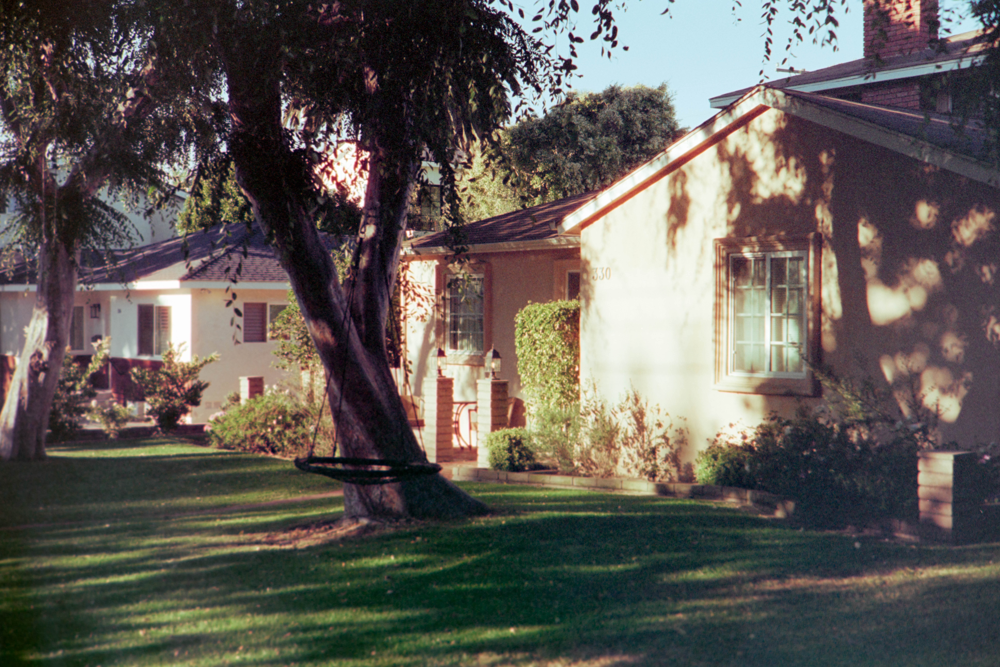

GRAD PORTAL
*THIS PROJECT PAGE IS STILL UNDER CONSTRUCTION*
June 2023 - July
Welcome to the "New Graduate Student Welcome Portal" project, a vital initiative designed
to ease the transition from undergraduate to graduate school. This portal provides a warm
congratulatory message to new and returning students, offers comprehensive resources about
their respective colleges, and includes a detailed checklist of essential pre-first day
tasks.
Crafted in Figma and implemented using Slate with HTML, CSS, and a touch of
JavaScript, this project streamlines the onboarding process, offering a user-friendly,
all-in-one hub for crucial information. By centralizing these resources, the portal
significantly enhances the graduate student experience, ensuring a smoother start to
their academic journey.
FINAL PRODUCT


LOW FIDELITY
The design foundation of this project, in both high and low fidelity, was driven by another application that students use to apply. The Graduate College wanted to mirror the sidebar navigation layout from that application in order to make the transition smoother and familiar to students.
HIGH FIDELITY
The design foundation of this project, in both high and low fidelity, was driven by another application that students use to apply. The Graduate College wanted to mirror the sidebar navigation layout from that application in order to make the transition smoother and familiar to students.